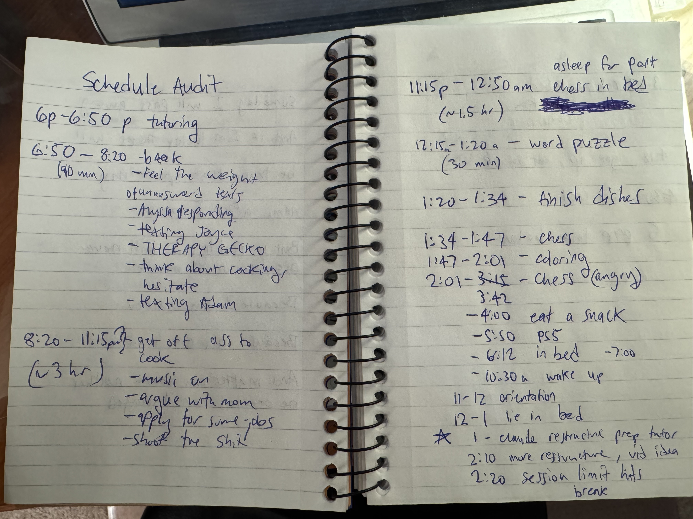
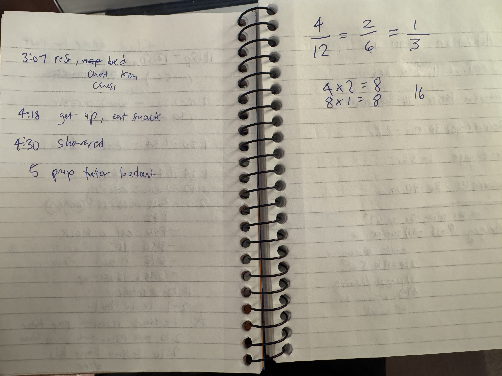

A guide to building a daily rhythm that works with your nervous system — not against it.
By Vincent · Present Tense Finance
Not because I was lazy. Not because I didn't know better. But because the weight I was carrying — job loss, grief, the particular exhaustion of a life mid-reorganization — had made the usual structures feel hostile. A to-do list felt like an accusation. A time-blocked calendar felt like a dare.
I knew what good days looked like in theory. I'd built spreadsheets. I understood the numbers. But my map was distorted and my feelings were jumbled, and no amount of calendars, to-do lists, or time-blocking apps was going to fix that — because the problem wasn't my tools. The problem was that my nervous system was running the show, and nobody had consulted it when the schedule was made.
So I did what I try to do with the people I work with. I audited.
Not my budget this time. My day. Twenty-four hours, honest and granular — what I was actually doing, when, and most importantly, how each piece felt in my body before, during, and after. Not what I thought I should be doing. What was actually happening.
Something unexpected came out of that audit before I'd even built anything from it. I started doing things I already knew were good for me. Not because I'd discovered something new. Because the act of looking closely had made the latent visible. The capacity was always there. It just hadn't been seen.
That's when I understood something that eventually became a whole other conversation: the problem was never laziness. It was latency.
An energy audit is not a time audit. You're not trying to optimize. You're trying to understand the texture of your day — what draws from you and what restores you. For each thing you did, notice three things: what it was, roughly when, and how it felt in your body. Not how you think it should have felt. Just the felt sense.
You're not grading yourself. You're collecting data.
Messy. Honest. Real. This is the actual page from the day I did it.


From this, a pattern started to emerge. Not a schedule — a rhythm.
When I looked at my audit honestly, the first thing I noticed wasn't a pattern. It was a fracture.
The 90-minute "break" that was really just floating — unanswered texts, hesitation, scrolling, not quite resting and not quite doing anything. The chess spiral that started as recovery and tipped into something agitated and consuming. The long stretch of cooking that bled into job applications that bled into conversation with no real transition between any of it.
States without edges. Rest that didn't restore. Work that didn't end cleanly.
Nothing was catastrophically wrong. But nothing was landing either. The day had activity without rhythm — and a nervous system under load needs rhythm more than it needs productivity.
What was missing wasn't more discipline. It was structure that accounted for how energy actually moves.
The six states didn't come from a book. They came from looking at the fractures and asking: what would have to be true for this to feel different?
I didn't answer that question alone. I thought out loud — with something that could reflect it back. For you that might be a friend, a mentor, a therapist, a coach, or a conversation with an AI. The tool matters less than the act of externalizing it. Some things only become visible when you say them out loud to something outside yourself.
My day wasn't a flat line of tasks. It was a series of states, each with its own texture, its own energy demand, its own natural entry and exit point.
Before we go further, a choice. How you proceed depends on where you are and what you need.
There's no wrong answer. The only wrong move is forcing yourself down a path that doesn't fit your current capacity — which is exactly what this whole framework is trying to move you away from.
Every season carries weight. The question isn't whether you're carrying something — it's what, and how much.
I call these load factors. The conditions present in your life that shape how much capacity you have on any given day. For me, in the season where this framework was born, the load factors were unemployment and grief. Both heavy. Both chronic. Both capable of making a normal Tuesday feel like wading through concrete.
But load factors aren't always that dramatic. Maybe you hate your job and spend eight hours a day managing that low-grade dread. Maybe you're a single parent and the mental load of holding everything together for someone else leaves very little for yourself by evening. Maybe you're in recovery. Maybe you're just in a season of too much.
The load factor isn't a character flaw. It's a condition. Any structure you build has to account for it honestly — because a framework designed for a low-load season will fail you in a high-load one, and that failure will feel personal even when it isn't.
The framework you build today is not the framework you'll use forever. That's not a flaw — that's the point.
When I built wave-based structure, I was unemployed and grieving. My days had no external shape, which meant I had to construct one entirely from the inside. Six states made sense for that season because I had the time and the need for that level of granularity.
But that season is changing. I'm moving toward full-time work — and the framework needs to move with me.
Same framework. Different season. Completely different shape.
The mistake most productivity systems make is assuming your life is stable enough for a fixed answer. Wave-based structure assumes it isn't. Hold it loosely. When now changes, you're allowed to change with it. That's not inconsistency. That's attunement.
You've just read about two different seasons and two different shapes the framework took. Now turn it toward yourself.
What season are you in right now? And what does that season actually require?
The framework that gets used is always better than the framework that's perfect on paper.
Once the framework had a shape, I needed somewhere to live it. So I built a tool. I called it Vision — after the Marvel character. Someone who holds extraordinary capacity quietly, without making a show of it. That felt right.
Vision is a small digital companion. It's not a calendar. It's not a to-do list. It holds the framework — your states, your sequence — and lets you move through them with a simple tap.
Vision was built for me, which means it reflects my states and my season. If you've borrowed the framework, it's available to try as-is — with the same caveat. Treat it as a starting point, not a prescription.
Vision is designed to be lightweight. Here's all you need to know to get started.
When you open it, you'll see your six states listed for the day. Tap a state when you enter it. That's the core interaction — nothing more complicated than that.
At the top right is a small color circle. Tap it to change the theme. Pick whatever feels right.
When your day is complete, tap "The Day Is Done." The stats page unlocks — showing your days completed, partial days, and how many times you've used each protocol — and then seals until tomorrow. The day is done. It's recorded. You can't go back and second-guess it, which is the point.
Nothing resets. Nothing is lost. Every number only goes up.
One last thing: if Vision doesn't fit your states or your season, that's expected. It was built for one person. Use what works, ignore what doesn't, and trust your own read on what your nervous system actually needs.
What you've just read is a distillation of a process that took me weeks of honest self-examination, iteration, and more than a few false starts. I'm glad it's now something I can hand to another person in a single sitting.
If you take this, sit with it, build something for yourself, and never spend another moment or dollar going further — I mean this sincerely — that's enough. The fact that you gave this your time and attention is not lost on me. This was made with care, and you received it with care, and that exchange is complete and whole on its own.
If something here opened a door you want to walk through with support, that's what I'm here for. The work I do with clients is exactly this — sitting with someone, helping them audit honestly, building something that actually fits their nervous system and their season. You don't have to figure it out alone if you don't want to.
Either way, I'm rooting for you.
Present Tense Finance · because how you feel matters
Let's talk →